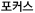
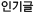

[##_title_##]
로그인
|
회원가입
관리
|
로그아웃
[##_magazine_focus_##]
[##_notice_title_##]
[##_feed_title_##]
최신글
포커스
[##_search_all_##]
에 대한 검색결과
[##_search_count_##]
건
[##_search_tag_##]
에 대한 검색결과
[##_search_count_##]
건
[##_search_blogtitle_##]
[##_search_blogurl_##]
[##_search_blogdescription_##]
블로그
"[##_search_blogtitle_##]"
에 대한 검색결과
[##_search_blogcount_##]
건
[##_search_date:Y년 m월 d일_##]
에 대한 검색결과
[##_search_count_##]
건
[##_search_category_##]
에 대한 검색결과
[##_search_count_##]
건
검색결과가 없습니다.
수집된 글이 없습니다.
[비공개]
[##_post_title_##]
[##_post_description_##]
[##_post_blogname_##]
|
[##_post_date_##]
|
추천
[##_boom_count_##]
추천
[##_tag_name_##]
[##_feeds_title_##]
[##_feeds_blogurl_##]
[##_feeds_description_##]
[##_feeds_created_##] (최근 업데이트 : [##_feeds_lastupdate_##])
이 블로그에 등록된 최근 글
[##_feeds_recent_title_##]
[##_feeds_recent_date_##]
[##_page_number_##]
이전
|
다음
맨위로

[##_focus_title_##]
[##_focus_author_##]
|
[##_focus_date_##]

[##_boom_title_##]
[##_boom_author_##]
|
[##_boom_date_##]
최신글
포커스